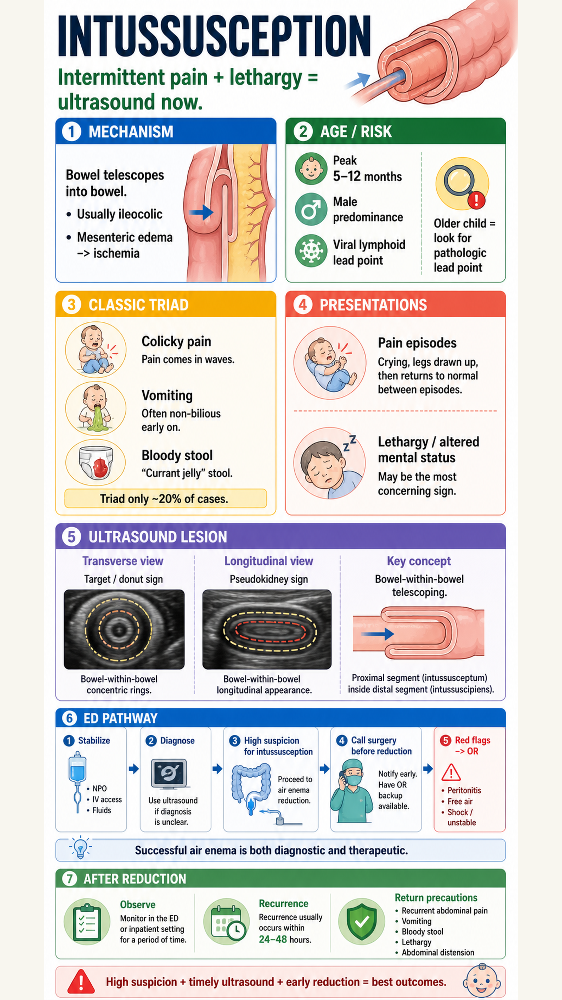
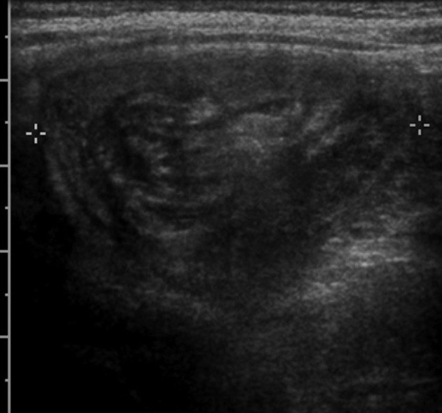
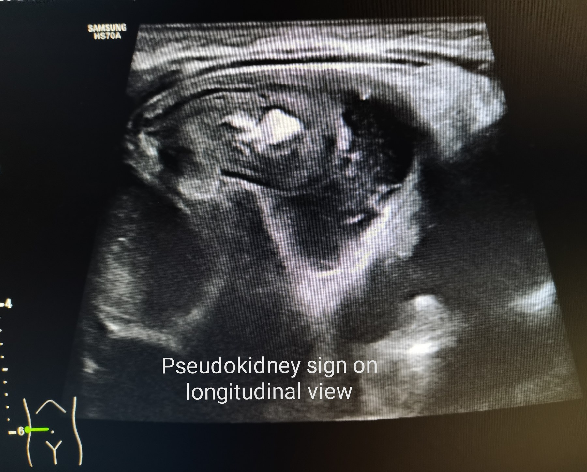

{kind=link}
{kind=link}
Intussusception: Ultrasound + ED Reduction Pathway
ED approach to pediatric intussusception with real ultrasound examples and lesion description: target/donut sign, pseudokidney sign, bowel-within-bowel anatomy, pain-lethargy presentations, red flags, ultrasound/air-enema pathway, reduction contraindications, recurrence, and disposition.

U/S describe: transverse target/donut sign
- Round or oval bowel-within-bowel mass.
- Alternating hypoechoic and hyperechoic concentric rings from edematous bowel wall, mucosa, mesentery, and trapped bowel.
- Often found in right abdomen for ileocolic intussusception; scan systematically while the child is symptomatic and between pain episodes.
Image: Frank Gaillard/Radiopaedia via Wikimedia Commons, CC BY-SA 3.0/GFDL.

U/S describe: longitudinal pseudokidney sign
- Elongated layered mass resembling a kidney or hayfork.
- Represents intussusceptum entering intussuscipiens; central echogenic mesentery/fat may be visible.
- Free fluid, trapped fluid between bowel walls, absent Doppler flow, marked tenderness, or obstruction suggests higher-risk/ischemic bowel.
Image: Cerevisae via Wikimedia Commons, CC BY-SA 4.0.
ED framing
Peak is 5-12 months. Classic episodes are severe colicky pain with legs drawn up, then normal-appearing intervals. Lethargy or altered mental status can be the dominant presentation.
Clinical trap
The classic triad of colicky pain, vomiting, and bloody stool is uncommon; Tintinalli notes about 20%. Currant-jelly stool is late and not required.
Diagnosis pathway
If diagnosis is ambiguous, ultrasound first. If high suspicion is present, move directly toward air-contrast enema, which is diagnostic and therapeutic.
Before reduction
NPO, IV access, isotonic fluid boluses if dehydrated, analgesia/antiemetics as needed, and surgery notification before air enema in case reduction fails or perforation occurs.
Do not enema
Peritonitis, free air, shock, or unstable/toxic appearance should bypass enema and go to emergent surgical reduction/resuscitation.
After reduction
Observe for recurrent pain, vomiting, bloody stool, lethargy, or distension. Recurrence after successful reduction is roughly 10%, usually within 24-48 hours.
- Primary source: local Tintinalli 9th PDF text extract, mainly Ch.133 Acute Abdominal Pain in Infants and Children, Ch.131 vomiting/diarrhea, Ch.134 pediatric GI bleeding, and Ch.140 pediatric altered mental status.
- External cross-checks: Merck Manual Professional intussusception and NCBI StatPearls Intussusception.
- Real ultrasound images: target/donut sign and pseudokidney sign.
- Image workflow: main visual generated with Codex built-in
image_gen; real U/S images downloaded as separate attributed assets and described in HTML.
{kind=link}
{kind=link}